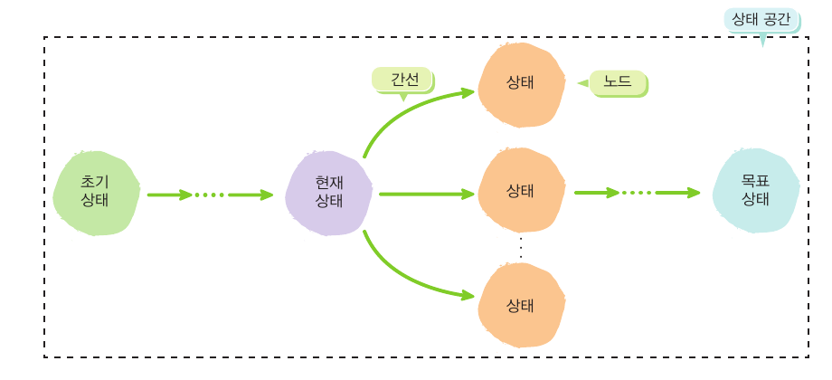

문제
현재 상태와 목표 상태 사이에 차이가 있는 상황
01
p.27
현재 상태와 목표 상태의 차이를 해결하기 위해 가장 효율적인 경로를 탐색한다.
현재 상태와 목표 상태 사이에 차이가 있는 상황
현재 상태에서 시도할 수 있는 다양한 선택 중 가장 효율적인 선택을 하여 최종적으로 목표 상태에 이르도록 하는 것
주어진 상태에서 선택할 수 있는 경로를 빠르게 살펴보고 답에 이르는 최적의 길을 찾는 것
초기 상태에서 목표 상태까지의 다양한 경로 중에서 가장 효율적인 경로를 찾는 탐색
02
p.28
주어진 문제를 탐색 가능한 형태로 다시 표현할 때 가장 일반적인 형태는 트리 구조이다.

03
p.30~32
문제에서 사전에 주어진 정보만 가지고 모든 상태를 하나씩 테스트하면서 목표 상태를 찾는 전략
모든 간선의 비용이 1이라고 가정하고,
상태를 모두 하나씩 순서대로 테스트한다.
트리 가장 위에서부터 차례대로 각 깊이(레벨)별로 테스트하면서 내려오는 순서로 진행
한 경로를 따라 가장 깊은 상태까지 먼저 내려간 뒤,
이전 상태로 돌아와 다른 경로를 탐색
간선마다 주어진 비용을 사용하고,
총비용이 가장 작은 상태부터 테스트한다.
누적 비용의 값을 확인하여 그 값이 가장 작은 상태를 먼저 선택하는 순서로 탐색을 진행
04
p.34~36
탐색 시간을 줄이기 위해 비용 정보와 함께 추정된 비용 정보를 사용하는 탐색
목표 상태를 언젠가 찾는다는 것이 보장되며, 너비 우선 탐색은 가장 짧은 경로를 찾는다.
상태 수가 많아질수록 상태 공간이 커져 탐색 시간이 크게 늘어난다.
탐색 시간을 더 줄이기 위해 문제 해결 경험과 지식을 바탕으로 한 경험적인 추정값을 추가로 사용한다.
현재 상태에서 목표 상태까지 드는 비용을 경험적 지식으로 추정한 값
누적 비용값과 휴리스틱값을 더한 최종 비용 추정치가 가장 작은 상태부터 탐색한다.
g(n) 초기 상태부터 현재 상태까지의 비용
h(n) 현재 상태부터 목표 상태까지의 추정 비용
모든 상태를 다 확인하지 않고 목표에 가까운 상태를 선택해 빠르고 효율적으로 탐색한다.
05
p.38~39
문제의 상태 공간과 목표에 따라 알맞은 탐색 전략을 선택하여 문제를 해결한다.
문제를 상태와 간선으로 표현하고, 초기 상태에서 목표 상태까지의 가장 효율적인 경로를 찾는다.
A* 알고리즘
게임의 경로 찾기
항공 경로 계획
나와 상대방의 가능한 상태를 살펴보고, 나에게 가장 유리한 선택을 결정한다.
휴리스틱 함수
Min-Max 알고리즘
대화·협상 시스템
체스 게임
주변 상태를 비교하여 더 좋은 상태로 이동하는 과정을 반복하며 충분히 좋은 상태를 찾는다.
언덕 오르기 탐색
유전자 알고리즘
단백질 폴딩
비행 일정 최적화
1 / 1